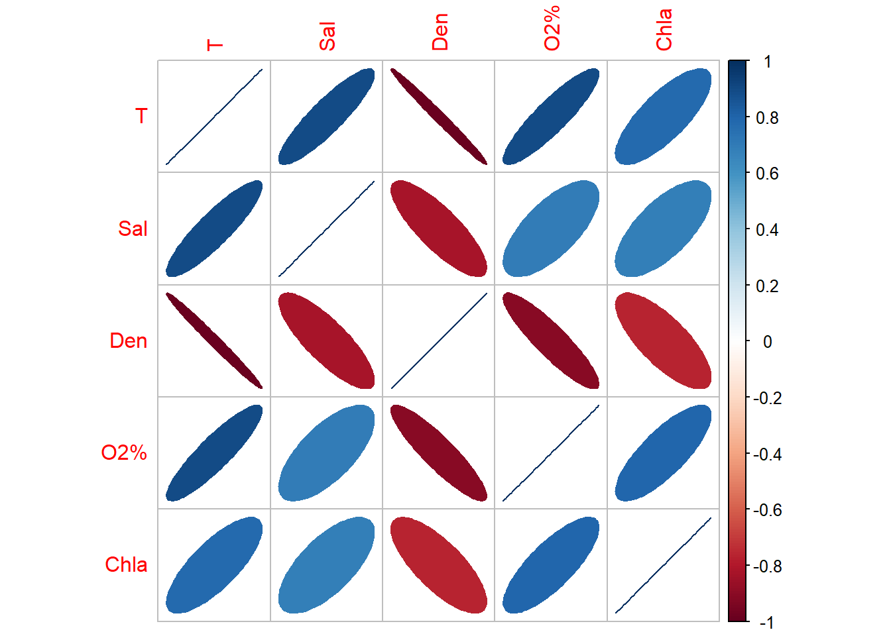

# Librerías requeridas
library(tidyverse) # Para procedimientos de las bases de datos
library(readxl) # Cargar bases de datos con Tidyverse
library(corrplot) # Para figuras de elipses
library(vegan) # Para el PCA y Transf. Hellinger
library(factoextra) # Para el PCA
library(kableExtra) # Para Editar las tablasEl siguiente ejercicio muestra como es el procedimiento inicial para las bases de datos que cuenten con muchas variables biológicas y se requiera resumirlas para el análisis exploratorio y las técnicas multivariadas vistas en la asignatura, basado en los siguientes pasos:
- Cargar bases de datos biológicas y ambientales al RStudio.
- Escoger las 10 especies más abundantes, para explorar las relaciones entre especies y con las variables ambientales.
- Utilizar todas las variables biológicas para la implementación de las técnicas multivariadas, como el PCA.
1. Caso Moluscos del Caribe

Paso 1. Cargar las librerías necesarias
Paso 2. Cargar las Las bases de datos
datos1 <- read_csv2("mollusca_resum.csv") # paquete "readxl"
# View(datos1)datos2 <- read_xlsx("mollusca_resum.xlsx","mollusca_resum")
View(datos2)# Variables ambientales
amb <- datos1[,2:10]
# head(amb)# Variables biológicas
spe <- datos1[,11:69]
# head(spe)
Paso 3. Extraer las 10 especies más abundantes
3.1 Filtrado con comandos generales
# Extraer los promedios de las abundancias
prom = colMeans(spe)
# Extraer las 15 especies más abundantes
# FALSE muestra las 15 menos abundantes
ab <- names(sort(prom, decreasing = TRUE)[1:15])
# Crear un nuevo dataframe con las dos columnas seleccionadas
spe.ab <- data.frame(datos1[, ab])
# Otra opción de dataframe: spe.ab <- datos1[, ab]
head(spe.ab) Orthyc Gzolvc Arczbr Lvcrds Mcmtnt Xnphrl Prpmsd Ptrars Nclncs Tllnpr...22
1 1 0 0 0 0 46 0 0 0 0
2 2 0 0 0 0 0 0 0 0 0
3 0 0 0 0 0 3 0 0 0 0
4 29 6 0 0 0 50 0 0 0 0
5 46 8 0 0 0 57 0 0 0 0
6 3 0 0 0 0 1 0 0 0 0
Csmsp. Nclnac Plystt Abrlng Pctnch
1 0 22 4 0 0
2 0 41 26 0 0
3 0 1 0 0 0
4 0 0 0 0 0
5 0 0 0 0 0
6 0 0 6 0 03.2 Filtrado con comandos tidyverse
# Extraer los promedios de las abundancias
prom <- spe %>%
summarise_all(mean)
# Obtener los nombres de las 10 especies más abundantes
ab <- prom %>%
pivot_longer(cols = everything()) %>%
arrange(desc(value)) %>%
slice(1:15) %>%
pull(name)
# Crear un nuevo dataframe con las dos columnas seleccionadas
spe_ab <- datos1 %>%
select(all_of(ab))
# Mostrar las primeras filas del nuevo dataframe
head(spe_ab)# A tibble: 6 × 15
Orthyc Gzolvc Arczbr Lvcrds Mcmtnt Xnphrl Prpmsd Ptrars Nclncs Tllnpr...22
<dbl> <dbl> <dbl> <dbl> <dbl> <dbl> <dbl> <dbl> <dbl> <dbl>
1 1 0 0 0 0 46 0 0 0 0
2 2 0 0 0 0 0 0 0 0 0
3 0 0 0 0 0 3 0 0 0 0
4 29 6 0 0 0 50 0 0 0 0
5 46 8 0 0 0 57 0 0 0 0
6 3 0 0 0 0 1 0 0 0 0
# ℹ 5 more variables: Csmsp. <dbl>, Nclnac <dbl>, Plystt <dbl>, Abrlng <dbl>,
# Pctnch <dbl>
Paso 4. Exploración de relaciones
4.1 Elipses para especies
# Elipses para especies
M1 <- cor(spe.ab) # Matriz de Correlación (M)
corrplot(M1, method = "ellipse") 
4.2 Elipses para ambientales
# Selección de variables numéricas
str(amb)tibble [81 × 9] (S3: tbl_df/tbl/data.frame)
$ Lat : num [1:81] 12.6 12.4 12.2 12.5 12.5 ...
$ Long : num [1:81] -71.8 -72.3 -72.5 -72.1 -72.3 ...
$ Rangos Prof.: chr [1:81] "200-330" "200-330" "200-330" "370-550" ...
$ Región : chr [1:81] "N" "N" "N" "N" ...
$ T : num [1:81] 14.42 14.56 13.26 9.99 10.18 ...
$ Sal : num [1:81] 35.8 35.8 35.6 35.1 35.1 ...
$ Den : num [1:81] 28.1 28 28.2 29.1 29 ...
$ O2% : num [1:81] 5.66 5.66 5.42 5.22 5.25 ...
$ Chla : num [1:81] 0 0.00227 0 0 0.01591 ...
4.3 Elipses para ambientales vs. especies
Paso 5. Técnica de PCA - factoExtra
5.1 Linealización de las abundancias
# Siete primeros Taxones transformados con Hellinger
spe.hel= decostand(spe,"hellinger")
round(head(spe.hel[,1:7]),2) Ptrars Orthyc Gzolvc Nclncs Arczbr Mcmtnt Trgnca
1 0 0.10 0.00 0 0 0 0
2 0 0.15 0.00 0 0 0 0
3 0 0.00 0.00 0 0 0 0
4 0 0.42 0.19 0 0 0 0
5 0 0.52 0.22 0 0 0 0
6 0 0.33 0.00 0 0 0 05.2 PCA para variables ambientales
# str(amb)
# Rangos de prof a factor
amb$`Rangos Prof.`=as.factor(amb$`Rangos Prof.`)
str(amb)tibble [81 × 9] (S3: tbl_df/tbl/data.frame)
$ Lat : num [1:81] 12.6 12.4 12.2 12.5 12.5 ...
$ Long : num [1:81] -71.8 -72.3 -72.5 -72.1 -72.3 ...
$ Rangos Prof.: Factor w/ 6 levels "100-150","20-90",..: 3 3 3 4 4 4 3 3 3 4 ...
$ Región : chr [1:81] "N" "N" "N" "N" ...
$ T : num [1:81] 14.42 14.56 13.26 9.99 10.18 ...
$ Sal : num [1:81] 35.8 35.8 35.6 35.1 35.1 ...
$ Den : num [1:81] 28.1 28 28.2 29.1 29 ...
$ O2% : num [1:81] 5.66 5.66 5.42 5.22 5.25 ...
$ Chla : num [1:81] 0 0.00227 0 0 0.01591 ...pca1 <- prcomp(amb[,5:9],scale.=T)
summary(pca1)Importance of components:
PC1 PC2 PC3 PC4 PC5
Standard deviation 2.0722 0.60345 0.5143 0.27451 0.04298
Proportion of Variance 0.8588 0.07283 0.0529 0.01507 0.00037
Cumulative Proportion 0.8588 0.93166 0.9846 0.99963 1.00000Enlace de la figura ENLACE
2. Caso Briofitos

Paso 1. Cargar las librerías necesarias
# Librerías requeridas
library(readxl) # Cargar bases de datos con Tidyverse
library(corrplot) # Para figuras de elipses
library(vegan) # Para el PCA y Transf. Hellinger
library(factoextra) # Para el PCA
library(FactoMineR) # Para el PCA
library(kableExtra) # Para Editar las tablas
library(MASS) # Para el NMDS
library(magrittr) # Para el NMDS
library(dplyr) # Para el NMDS
library(ggpubr) # Para el NMDS
library(tidyverse) # Para procedimientos de las bases de datos
Paso 2. Cargar las Las bases de datos
spe <- read_xls("molluscs-vasc-bryo.xls","bryo")
spe <- spe[,-1]
View(spe)
# str(spe) # 44 columnas, 1a es categóricaamb <- read_xls("molluscs-vasc-bryo.xls","env")
amb <- amb[,-1]
View(amb)
# str(amb) # 15 columnas, 1a es categórica
Paso 3. Extraer las 10 especies más abundantes
Filtrado con comandos generales
# Extraer los promedios de las abundancias
prom = colMeans(spe)
# Extraer las 10 especies más abundantes
# FALSE muestra las 15 menos abundantes
ab <- names(sort(prom, decreasing = TRUE)[1:15])
# Crear un nuevo dataframe con las dos columnas seleccionadas
spe.ab <- data.frame(spe[, ab])
# Otra opción de dataframe: spe.ab <- datos1[, ab]
head(spe.ab) CalCusp BryPseu CamStel CraComm PlaAffi CliDend DreCoss HomNite AulPalu
1 3 5 7 7 3 0 0 0 0
2 5 2 2 0 3 3 0 5 3
3 6 3 2 0 6 2 2 7 5
4 0 2 3 3 7 6 0 0 0
5 3 7 0 1 5 5 7 0 6
6 6 6 5 7 5 0 0 0 0
FisAdia SphTere CraFili HypPrat PhiFont PhiCalc
1 3 0 0 0 0 0
2 0 7 0 3 3 0
3 2 0 0 3 6 0
4 5 0 3 0 0 0
5 0 0 0 5 3 0
6 2 0 2 0 0 0
Paso 4. Exploración de relaciones
4.1 Elipses para especies
# Elipses para especies
M1 <- cor(spe.ab) # Matriz de Correlación (M)
corrplot(M1, method = "ellipse",order="AOE") 4.2 Elipses para ambientales
# Selección de variables numéricas
str(amb)tibble [43 × 14] (S3: tbl_df/tbl/data.frame)
$ Ca : num [1:43] 285.9 54.6 46.7 82 79.5 ...
$ Mg : num [1:43] 14.17 3.45 2.16 7.45 3.43 ...
$ Fe : num [1:43] 44.4 65.8 31 45.2 88.3 ...
$ K : num [1:43] 4.12 0.82 3.4 8.27 2.32 3.34 1.54 1.59 1.99 4.7 ...
$ Na : num [1:43] 17.98 2.74 5.85 44.39 11.54 ...
$ Si : num [1:43] 18.33 12.52 5.96 31.22 17.87 ...
$ SO4 : num [1:43] 48 5 7 47 8 46 20 42 54 42 ...
$ PO4 : num [1:43] 0.11 0.01 0.05 0.06 0.2 0.07 0.1 0.66 0.05 0.13 ...
$ N-NO3 : num [1:43] 0.1 0.1 0.3 1.4 0.1 2.4 1 2.7 0.2 0.2 ...
$ N-NH3 : num [1:43] 1.23 1.22 1.48 1.15 1.02 ...
$ Cl : num [1:43] 2.7 4.5 6 3.5 5.3 6.5 5.6 10.8 52.2 3.2 ...
$ pH : num [1:43] 7.6 7 6.8 7.4 7 8.1 5.9 6.7 7.1 7.1 ...
$ conduct: num [1:43] 530 400 310 648 344 472 104 328 690 480 ...
$ redox : num [1:43] -80 -250 -20 -204 -95 30 -190 -182 30 -230 ...4.2 Elipses para ambientales vs. especies

Paso 5. Técnica de PCA
5.1 Linealización de las abundancias
# Taxones transformados con Hellinger
spe.hel= decostand(spe,"hellinger")
round(head(spe.hel[,1:7]),2) AnePing AtrUndu AulPalu BraGlar BraMild BraRivu BryPseu
1 0.26 0.00 0.00 0 0.00 0 0.41
2 0.18 0.18 0.22 0 0.31 0 0.18
3 0.19 0.00 0.30 0 0.00 0 0.23
4 0.00 0.00 0.00 0 0.00 0 0.24
5 0.00 0.00 0.35 0 0.00 0 0.38
6 0.00 0.00 0.00 0 0.00 0 0.435.2 PCA para variables ambientales
PCA1 con paquete vegan
# Realización del pca
pca1 <- rda(log10(amb[1:13]+1), scale=T)
# summary(pca1)Se visualiza la formación de tres grupos de localiades.
5.3 PCA para variables biológicas
# Realización del pca
pca2 <- rda(spe.hel) También se visualiza la formación de tres grupos de localiades.
# Panel con dos figuras del pca
biplot(pca2, main="PCA - scaling 2", echo=FALSE) Warning in plot.window(...): "echo" is not a graphical parameterWarning in plot.xy(xy, type, ...): "echo" is not a graphical parameterWarning in axis(side = side, at = at, labels = labels, ...): "echo" is not a
graphical parameter
Warning in axis(side = side, at = at, labels = labels, ...): "echo" is not a
graphical parameterWarning in box(...): "echo" is not a graphical parameterWarning in title(...): "echo" is not a graphical parameter
Paso 5. Técnica de NMDS
5.1 NMDS para variables biológicas - vegan
No muestra un buen estrés o ajuste, por lo que se descarta.
# 1) Ordenación con el nmds
datos.nmds1 <- metaMDS(spe,trace = FALSE)
datos.nmds1
Call:
metaMDS(comm = spe, trace = FALSE)
global Multidimensional Scaling using monoMDS
Data: spe
Distance: bray
Dimensions: 2
Stress: 0.1362224
Stress type 1, weak ties
Best solution was repeated 1 time in 20 tries
The best solution was from try 20 (random start)
Scaling: centring, PC rotation, halfchange scaling
Species: expanded scores based on 'spe' Se visualiza la formación de tres grupos de localiades.
5.2 NMDS para variables biológicas - factoExtra
Escalamiento tomado del siguiente enlace Enlace Ver: Kruskal’s non-metric multidimensional scaling
De izquierda a derecha se visualizan mejor los tres grupos
initial value 25.045099
iter 5 value 19.383491
iter 10 value 18.444357
iter 15 value 18.255199
iter 20 value 18.115864
final value 18.031070
converged
Paso 6. Generación del factor
Como ya se vió en las pruebas con PCA y NMDS, se forman tres grupos. A continuación se formaran 4 grupos insertando a la variable agrupadora o factor grupo de la nueva base de datos datos.gr, con el método de clasificación jerárquico de ward (que se verá en el tema de clasificación con clúster), teniendo en cuenta un agrupamiento de las localidades, descrito en el libro de Borcard et al. (2018).
datos.w <- hclust(vegdist(spe), "ward.D") # Grupos con Cluster con ward
grupo <- cutree(datos.w, k = 3) # Generar 3 grupos (factor grupo)
datos.gr=data.frame(grupo,spe) # Base de datos con el factor agrupador
datos.gr$grupo=as.factor(datos.gr$grupo) # Crear la columna gr como factor
rotulos <- c("A", "B", "C") # Nuevos rótulos a los tres grupos creados
datos.gr$grupo <- factor(datos.gr$grupo,
labels = rotulos)
#str(datos.gr)
# Presentación de la tabla con las 10 primeras filas
datos.gr[1:10,] %>%
kbl(booktabs = F) %>%
kable_classic(full_width=F, html_font = "Cambria")| grupo | AnePing | AtrUndu | AulPalu | BraGlar | BraMild | BraRivu | BryPseu | CalCord | CalGiga | CalStram | CalCusp | CamStel | ChiPoly | CirPili | CliDend | CraComm | CraFili | DicBonj | DreCoss | DreExan | EucVert | EurHian | FisAdia | HomNite | HypPrat | LopBide | MarPoly | PelEndi | PelEpip | PhiCalc | PhiFont | PlaAffi | PlaUndu | PolComm | RhySqua | RhyTriq | SphFalla | SphFlex | SphPalu | SphSubs | SphTere | SphWarn | ThuPhil |
|---|---|---|---|---|---|---|---|---|---|---|---|---|---|---|---|---|---|---|---|---|---|---|---|---|---|---|---|---|---|---|---|---|---|---|---|---|---|---|---|---|---|---|---|
| A | 2 | 0 | 0 | 0 | 0 | 0 | 5 | 0 | 0 | 0 | 3 | 7 | 0 | 0 | 0 | 7 | 0 | 0 | 0 | 0 | 0 | 0 | 3 | 0 | 0 | 0 | 0 | 0 | 0 | 0 | 0 | 3 | 0 | 0 | 0 | 0 | 0 | 0 | 0 | 0 | 0 | 0 | 0 |
| B | 2 | 2 | 3 | 0 | 6 | 0 | 2 | 0 | 3 | 0 | 5 | 2 | 0 | 3 | 3 | 0 | 0 | 0 | 0 | 0 | 0 | 0 | 0 | 5 | 3 | 0 | 0 | 0 | 0 | 0 | 3 | 3 | 0 | 0 | 7 | 0 | 0 | 0 | 0 | 0 | 7 | 0 | 2 |
| B | 2 | 0 | 5 | 0 | 0 | 0 | 3 | 0 | 0 | 0 | 6 | 2 | 0 | 2 | 2 | 0 | 0 | 0 | 2 | 0 | 0 | 0 | 2 | 7 | 3 | 0 | 0 | 0 | 0 | 0 | 6 | 6 | 0 | 0 | 3 | 2 | 0 | 1 | 0 | 0 | 0 | 1 | 0 |
| A | 0 | 0 | 0 | 0 | 0 | 0 | 2 | 0 | 0 | 0 | 0 | 3 | 0 | 0 | 6 | 3 | 3 | 0 | 0 | 0 | 0 | 0 | 5 | 0 | 0 | 2 | 0 | 0 | 2 | 0 | 0 | 7 | 3 | 0 | 0 | 0 | 0 | 0 | 0 | 0 | 0 | 0 | 0 |
| B | 0 | 0 | 6 | 0 | 0 | 0 | 7 | 0 | 5 | 0 | 3 | 0 | 0 | 2 | 5 | 1 | 0 | 0 | 7 | 0 | 0 | 0 | 0 | 0 | 5 | 0 | 0 | 0 | 0 | 0 | 3 | 5 | 0 | 0 | 0 | 0 | 0 | 0 | 0 | 0 | 0 | 0 | 0 |
| A | 0 | 0 | 0 | 0 | 0 | 0 | 6 | 0 | 0 | 0 | 6 | 5 | 0 | 0 | 0 | 7 | 2 | 0 | 0 | 0 | 0 | 0 | 2 | 0 | 0 | 0 | 0 | 0 | 0 | 0 | 0 | 5 | 0 | 0 | 0 | 0 | 0 | 0 | 0 | 0 | 0 | 0 | 0 |
| C | 2 | 0 | 6 | 0 | 0 | 0 | 0 | 0 | 0 | 6 | 6 | 0 | 0 | 0 | 0 | 0 | 0 | 0 | 0 | 0 | 0 | 0 | 0 | 0 | 0 | 0 | 0 | 0 | 0 | 0 | 0 | 0 | 0 | 0 | 2 | 0 | 0 | 3 | 0 | 0 | 7 | 0 | 0 |
| C | 0 | 0 | 0 | 0 | 0 | 0 | 0 | 0 | 0 | 0 | 0 | 0 | 0 | 0 | 0 | 0 | 0 | 0 | 0 | 0 | 0 | 0 | 0 | 0 | 0 | 0 | 0 | 0 | 0 | 0 | 0 | 0 | 0 | 2 | 0 | 0 | 7 | 6 | 6 | 0 | 5 | 0 | 0 |
| A | 0 | 0 | 0 | 0 | 0 | 2 | 6 | 0 | 0 | 0 | 6 | 2 | 0 | 0 | 0 | 8 | 3 | 0 | 0 | 0 | 0 | 2 | 0 | 0 | 0 | 0 | 0 | 0 | 0 | 3 | 0 | 0 | 0 | 0 | 0 | 0 | 0 | 0 | 0 | 0 | 0 | 0 | 0 |
| B | 0 | 0 | 7 | 0 | 0 | 0 | 3 | 2 | 0 | 0 | 3 | 2 | 0 | 0 | 5 | 0 | 0 | 3 | 0 | 0 | 0 | 0 | 0 | 6 | 3 | 0 | 0 | 0 | 0 | 0 | 2 | 2 | 0 | 0 | 2 | 0 | 0 | 0 | 0 | 0 | 0 | 0 | 0 |
Paso 7. PCA con el factor - factoExtra
# PCA con variables biológicas
pca3 <- prcomp(datos.gr[,2:44])
# summary(pca3)Enlace de la figura ENLACE.